ClinicusMed · Dossiê Clinicus — Padrão de Excelência
O número de peças ósseas VARIA com a idade:
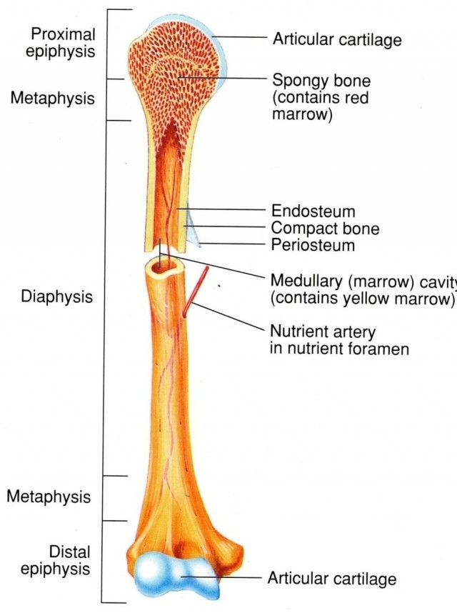
| Tipo | Característica |
|---|---|
| Ossos Longos | Predomina o comprimento sobre a espessura/largura. Têm um corpo (diáfise) e 2 extremos (epífises). A união diáfise-epífise se chama METÁFISE. Ex: ossos dos 2 primeiros segmentos dos membros |
| Ossos Planos | Espessura reduzida, predomínio de comprimento e largura. Formam paredes das cavidades craniana, nasais, orbitárias e pélvica. Ex: escápula, coxal, occipital |
| Ossos Curtos | Volume restrito, 3 eixos semelhantes, geralmente cuboides. Ex: carpo e tarso |
| Ossos Irregulares | Forma variável, não se encaixa nas outras categorias |
| Tipo | Característica |
|---|---|
| Ossos Pneumáticos | Alguns ossos da face/crânio têm cavidades preenchidas de ar. CÉLULAS: dimensões reduzidas. SEIOS: tamanho maior |
| Ossos Sesamoides | Diminutos, podem ser inconstantes (nem sempre presentes) |
| Tipo | Característica |
|---|---|
| Osso Compacto | Aspecto denso e sólido, contém sistemas haversianos, mais compactado |
| Osso Esponjoso | Reticulado, com presença de espaços abertos |
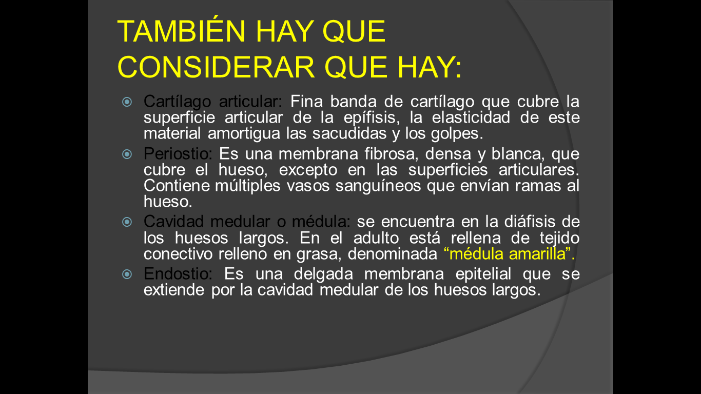
| Componente | Descrição |
|---|---|
| Cartilagem Articular | Recobre as superfícies articulares |
| Periósteo | Membrana que recobre a superfície externa (exceto onde há cartilagem articular) |
| Cavidade Medular (medula) | Espaço interno da diáfise |
| Endósteo | Membrana que reveste a cavidade medular internamente |
Condutos de transmissão: comunicam uma face do osso à face oposta, permitindo a passagem de órgãos diversos.
| Ordem | Localização |
|---|---|
| 1ª ordem | Diáfises de ossos longos e faces de ossos planos — passa a artéria nutrícia PRINCIPAL, terminando no canal medular |
| 2ª ordem | Epífises de ossos longos, bordas/ângulos de ossos planos, superfície não articular de ossos curtos |
| 3ª ordem | Os menores — em toda superfície NÃO articular do osso |
Os nervos penetram acompanhando as artérias (nervos perivasculares), principalmente a artéria nutrícia principal. São fibras SENSITIVAS, responsáveis pela DOR óssea — vindas de nervos musculares.
| Tipo | Característica |
|---|---|
| Eminências Articulares | Regulares — ex: cabeça do úmero, côndilos do fêmur |
| Eminências Extra-articulares | Muito variáveis, irregulares, rugosas — geralmente pra inserções musculares/ligamentares. Chamadas de apófises, protuberâncias, tuberosidades, espinhas, cristas, linhas |
| Cavidades Articulares | Depressões que encaixam numa saliente do osso articular — ex: cavidades cotiloides, glenoides, platôs tibiais |
Cavidades não articulares:
| Tipo | Característica |
|---|---|
| Ossificação Fibrosa (membranosa) | Ossos se desenvolvem DIRETAMENTE no tecido conjuntivo embrionário — "ossos de membrana" (abóbada craniana e face) |
| Ossificação Endocondral | Ossos se desenvolvem num esboço CARTILAGINOSO. Centro primário forma a maior parte do osso; centros secundários aparecem depois, formando apófises |
| Tipo de Crescimento | Mecanismo |
|---|---|
| Em comprimento | Ocorre majoritariamente na cartilagem epifisária. Cada osso longo tem 2 cartilagens de crescimento; a mais ativa é a "epífise fértil" — regra prática: "perto do joelho, longe do cotovelo" |
| Em espessura | Ocorre pela camada profunda, osteogênica, do periósteo |
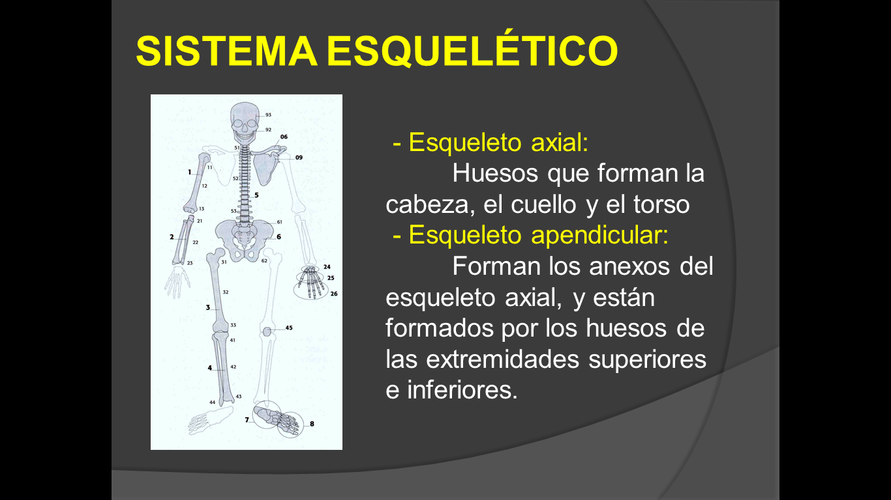
| Divisão | Composição |
|---|---|
| Esqueleto Axial | Crânio, coluna vertebral, costelas, esterno |
| Esqueleto Apendicular | Membros superiores e inferiores + cinturas escapular e pélvica |
Vamos acompanhar uma criança de 10 anos com fratura no rádio distal, relacionando o caso às cartilagens de crescimento e ao potencial de recuperação. O caso evolui em 3 níveis — clica em cada um pra ver como as coisas vão se desenrolando.
O sistema guarda, no seu navegador, quais cards você já sabe bem e quais precisam voltar mais cedo — cada vez que você avalia um card, ele recalcula quando ele deve voltar.
10 questões, do mais básico ao mais puxado. Escolhe uma alternativa, depois clica em "Ver comentário completo" — vale a pena ler até quando você acerta, porque o comentário explica cada alternativa, não só a certa.
Imagens do material original da Dra. Liz Leguizamón, organizadas por tema. Osteologia é uma das partes mais visuais e mais cobradas de Anatomía I — vale a pena revisar essas imagens várias vezes.
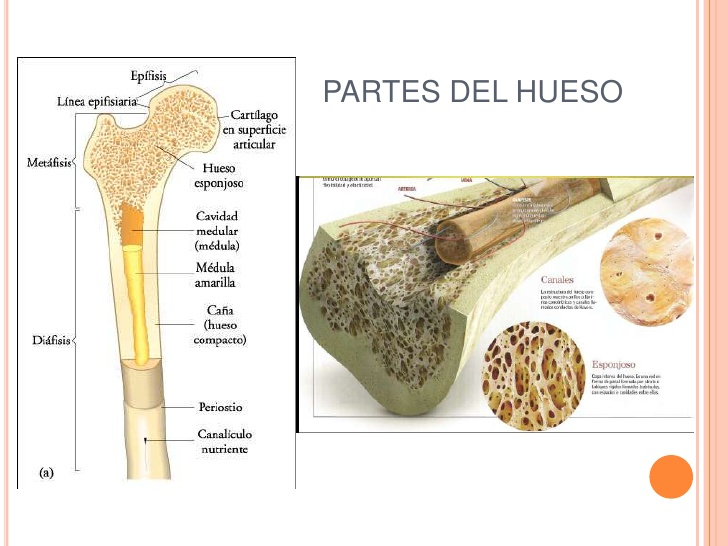
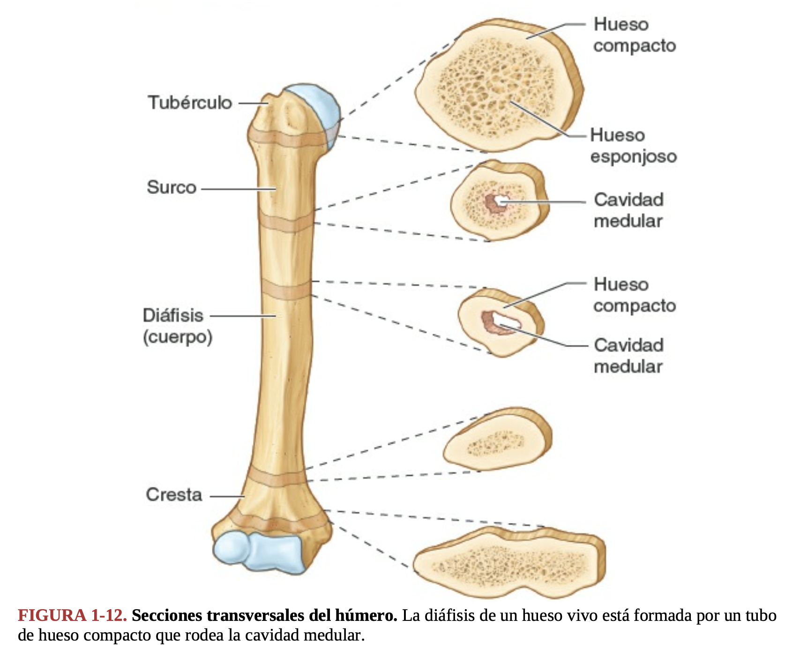
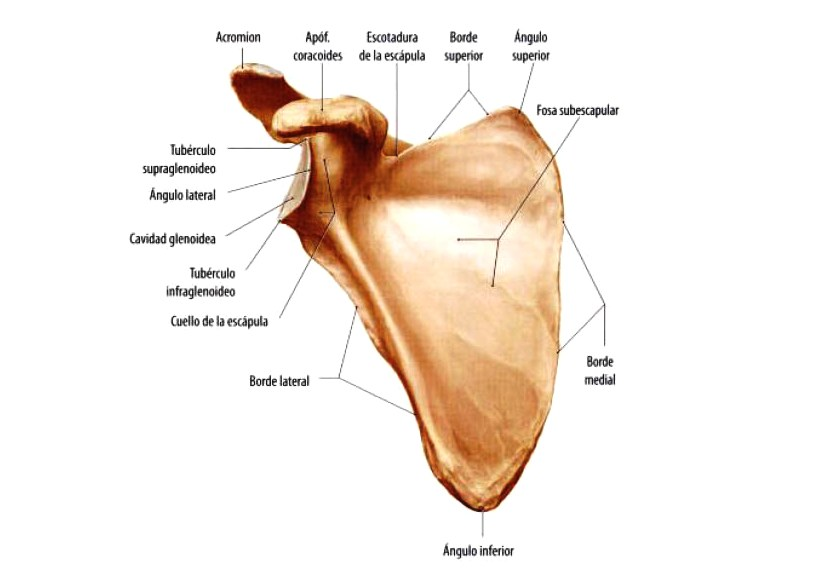
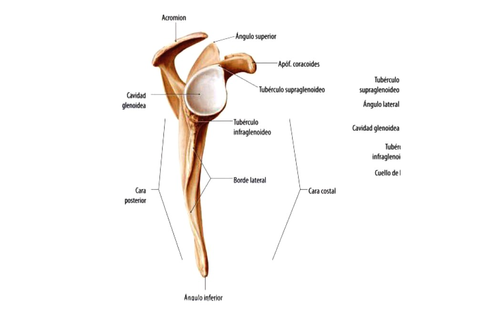
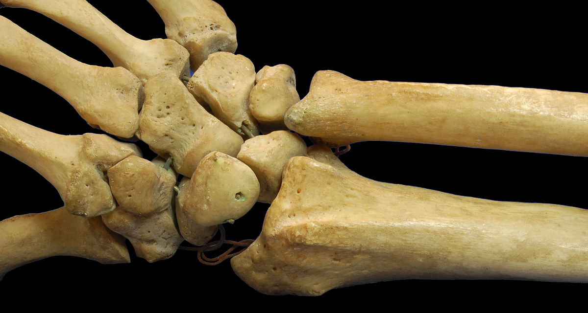
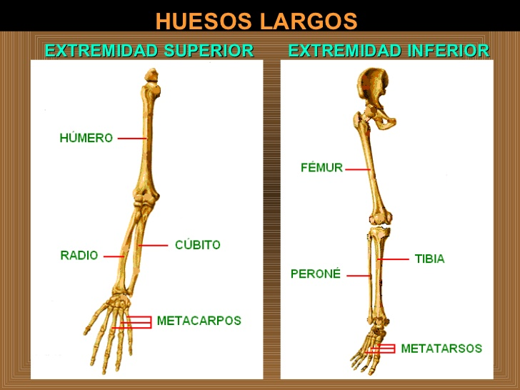
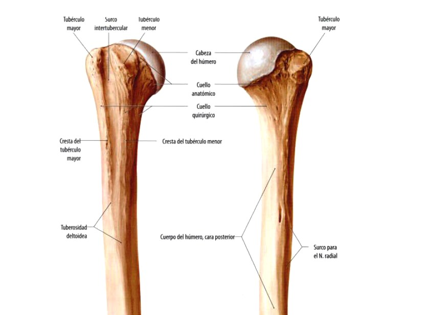
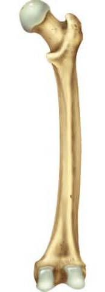
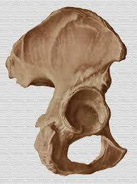
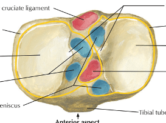
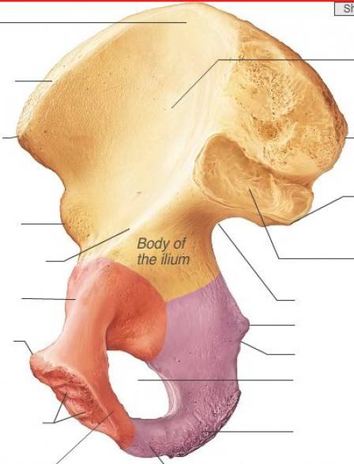
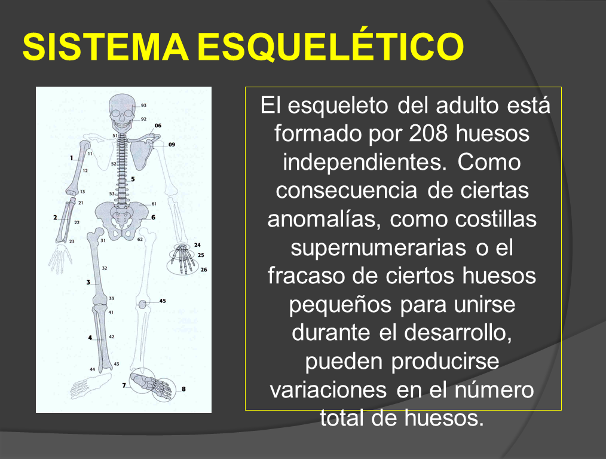
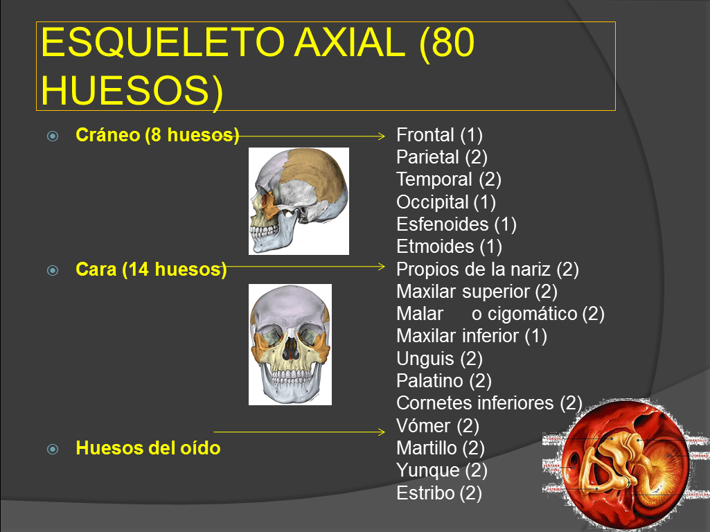
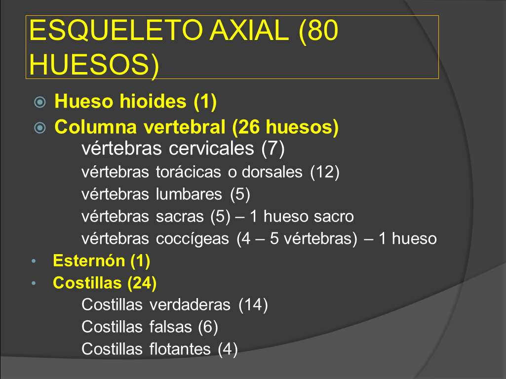